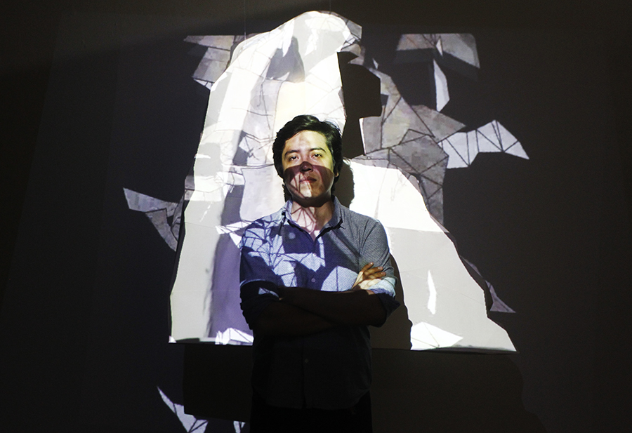
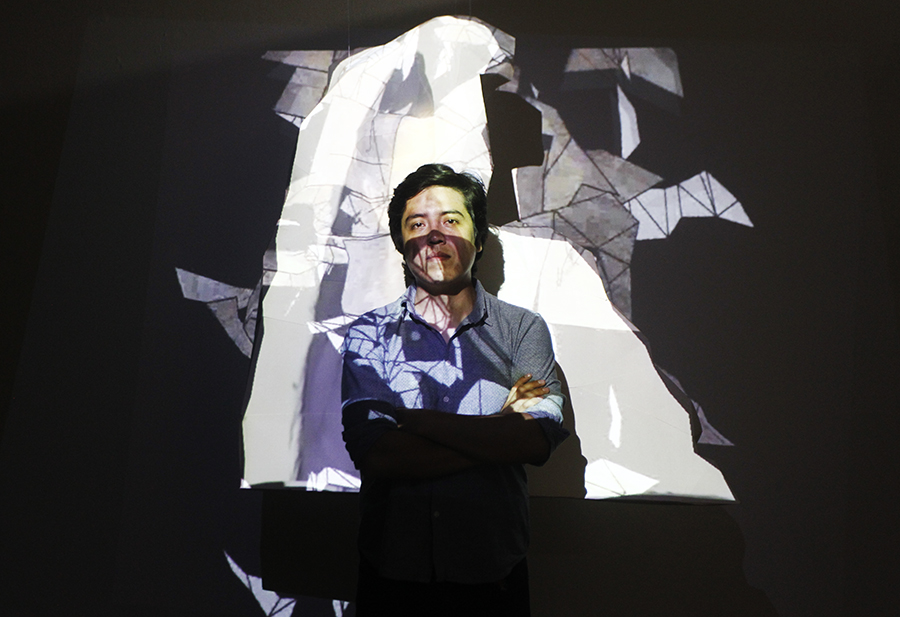

INICIO
OBRAS
ARTISTAS
NOSOTROS
CONTACTO
 

Actualmente reside en Lima. Egresado de la Escuela Nacional Superior Autónoma de Bellas Artes del Perú. Medalla de oro en la especialidad de escultura 2018 y distinción al mérito académico 2018. Ha participado en distintas muestras colectivas e individuales. El trabajo que realiza está enfocado en la relación del ciudadano con la memoria colectiva e individual a partir del periodo de violencia política en el país. Las obras que realiza en su mayoría son
interactivas con el objetivo de integrar aquella memoria perdida en el espectador.
Integrante del Grupo Gallinazo enfocado en intervenciones en el espacio público relacionados a temas de memoria. Gestor del proyecto Hogares de Memoria que consiste en implantar pequeños museos de memoria directamente en el hogar de las víctimas del periodo de violencia. Gestor del espacio OriLab, proyecto que a manera de laboratorio investiga las técnicas de plegado para ser llevadas a las manifestaciones artísticas, de diseño y pedagógicas. Docente en la ENSABAP del taller de escultura.
2020
Hogares de memoria – Exposición Virtual Centro Cultural Bellas Artes /
Caso La Cantuta
Hogares de memoria – Hogar de memoria de Kenneth Anzualdo y Martín Roca.
2019
Operación Tigre – Centro Cultural de Bellas Artes del Perú
Museo metropolitano de Lima - Cosmogonías
Centro Cultural Bellas Artes Lima – Operación Tigre
El uso de las formas para pensar las cosas – Galería Limaq
Muestra de muestras III - Centro Cultural Ricardo Palma, de la Municipalidad de
Miraflores
Unidad en lo complejo – Galería Fórum
2017
Noche de arte sede central BBVA
Exposición de paleoarte y paleoreconstrucción: “ecosistemas marinos del
pasado”- Ministerio de Cultura.
2016
Noche de arte sede central BBVA
Exposición pictórica y escultórica de la ENSABAP-Aniversario
institucional de la Universidad Nacional de educación Enrique Guzmán y Valle
– La Cantuta.
Vía Crucis – Centro Cultural de Ate.
Exposición colectiva de fotografía –Centro Cultural Rímac.
2015
La dimensión del papel. Galería Dédalo
EXPOSICIONES INDIVIDUALES
2018
Proyecto Museo Papel - Museo Histórico Regional Casa Garcilaso Cusco
“Reliquias de papel”.
2009
El papel hecho arte. Hall de exposiciones del Centro Cultural Peruano
Japonés.
OTROS
2020
Docente en el ENSABAP en el curso de Taller de Escultura.
Gestor del proyecto Hogares de memoria: museos no convencionales para
confrontar el olvido
2019
Docente en el Centro Pre de Bellas Artes del Perú en el curso de
percepción y proyecto de investigación
2018
Primer puesto en competencia experimental Festival al Este
Pasantía estudiantil a la Universidad Central del Ecuador- Quito
organizada por la Escuela Superior Autónoma de Bellas Artes del Perú.
Ganador del proyecto expositivo “Operación Tigre” categoría proyectos
mixtos, organizado por los 100 años de la Escuela Nacional Superior Autónoma
de Bellas Artes del Perú.
Expositor en el “1er laboratorio de proyectos de investigación en Arte y
Diseño” de Pontificia Universidad Católica del Perú.
2016-2019
Integrante del Grupo Gallinazo enfocados en proyectos de memoria
política y social.
Obra